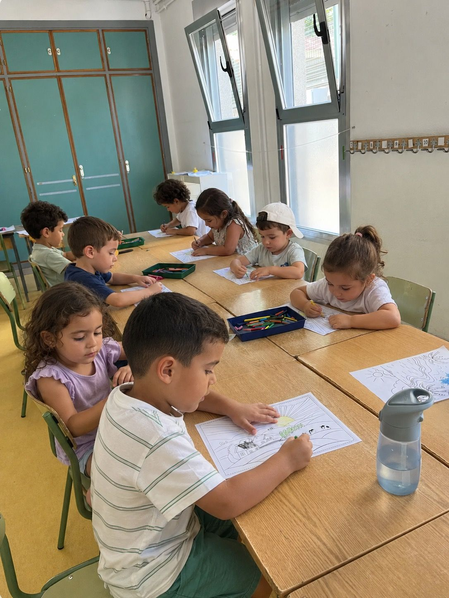

Their education, the best gift
We help children and teenagers learn, live and enjoy English at every stage of their growth.
- 30+ years of experience
- Native teachers
- More than 1,000 families supported
- Programmes in Ireland, the United Kingdom and the USA

Our programmes
From summer camp to a school year abroad, we support every pupil, from the youngest to sixth-formers, all year round.

Not sure which option fits best?
Tell us your child's age and what you're looking for, and we'll guide you.
Help me choose →We grow with every pupil
From their first steps in English to living it abroad, we support every pupil at every stage of their growth.

Discover
First steps in English, playing with native teachers.

Grow
They gain vocabulary and confidence, year after year.

Advance
They gain fluency and independence, and bring them to their own projects.

Live it
English stops being a subject and becomes an experience.
English is learnt by living it
Academic programmes in Ireland, the United Kingdom and the United States, with support at every step of the way.
- Verified host family
- International medical insurance
- Local coordinator on site
- Academic continuity and recognition


30 años acompañando familias
Profesores nativos
El 100% de nuestro equipo es nativo y está formado específicamente en enseñanza a niños y adolescentes.
Metodología activa
Aprender jugando, experimentando y viviendo el idioma en cada clase, no memorizar.
Acompañamiento real
No somos una plataforma. Cada familia tiene un referente que la acompaña en cada etapa.
Experiencia global
Programas en Madrid, Irlanda, Reino Unido y Estados Unidos. Desde campamentos hasta años académicos.
Stories from families who have already taken the step
"Marcos left the camp asking to come back next summer, and at school he now takes part far more in class."
"We sent Lucía to Ireland for a year at 15 and it felt daunting. They called us every month to tell us how she was doing. She came back with a B2 and far more independence."
"What I value most is that each term they send us a real report on each child, not a generic template. You can tell the difference."
Shall we talk?
Tell us what you're looking for and we'll help you find the best option.
Where every summer they discover a new talent
Daily challenges in English, with 100% native monitors, based on the 8 multiple intelligences. Age-based groups, in Madrid. Places sell out every summer.
- Ages 3–10
- From €160/week


A day at TalenTalk
8 different challenges, a discovery each day, and each one works on a different intelligence.
And a surprise challenge every day.
See the full timetable, hour by hour
Morning assembly
English booklet, storytelling and arts & crafts
Snack and getting ready
Snack and change of clothes for the water games
Water games
The most eagerly awaited activity of the day
Change of clothes
We dry off and get ready to carry on
Special activity
Drama, sport or experiments, depending on the day
Lunch and downtime
Lunch and rest before pick-up
Age-based groups
Two different formats, each designed for the right stage.

The youngest
Guided play, a gentle pace and first steps in each intelligence, in age-based groups.

More independence
Each day they choose between several challenges, in groups organised by age and level.

Why children love it
- Water games every day, the most eagerly awaited activity.
- Different challenges every day: art, music, science, sport and more.
- A surprise challenge that changes each day.
- They make new friends every summer.
Why it reassures families
- 100% native monitors, trained to work with children.
- The TalenTalk® Method, with over 20 years behind it, since 2002.
- A detailed hour-by-hour timetable, no surprises.
- Two sites in Madrid: Sagrado Corazón Rosales and Chamartín.
"We signed Marcos up for the Rosales camp not knowing whether he'd last 3 weeks straight of English. He left asking to come back next summer, and at school they've already told us he takes part more in class."
What a day at camp with us is like

From summer camp in Madrid to spending a summer, or a whole school year, abroad. We support families at every stage of the journey.
Enrol your child in the camp
Choose the weeks that suit you, they don't have to be consecutive. Fill in the form and we'll confirm the place within 24 hours.
✓ 3 quick steps, under 2 minutesAfter-school English to speak, take part and gain confidence
From Early Years to Secondary, at your child's own school and with native teachers in small groups. A continuous programme so every pupil gains real fluency and level speaking English.
- 100% native teachers
- Small groups
- At your child's own school
- From Early Years to Secondary
Timetable and fees for the programme at Colegio Sagrado Corazón.
All in English, from start to finish
Four things that happen in every session, whatever the focus.
Speaking and listening
They listen and speak in English from day one, without translating in their heads.
Communicating with confidence
They learn to say what they think and to stand up for their own ideas.
Vocabulary and level
Progression tailored to their stage, with Cambridge exam preparation.
Play, create and collaborate
Games, projects and teamwork as a way of learning, not as a reward.
A club for every age
The same method, tailored to each pupil's stage, from Early Years to Secondary.
Club Fun TalenTalk
Through play, building listening skills and their first conversations.
Club TalenTalk Walkers
Lively role-play, short dialogues, stories and songs.
Club TalenTalk Prime
Focused projects that enrich their communication skills.
Club TalenTalk Senior Challenge
Real-life situations and active practice to boost their level.
KETPETFCECAEWhat they take away, beyond the language
- Fluency and confidence when speaking in front of others.
- Vocabulary and listening skills, year after year.
- Creativity and critical thinking.
- Teamwork and emotional intelligence.
Ideal for families who…
- Want their child to speak more English, not memorise more.
- Are looking for continuity all year round, not one-off classes.
- Value small groups and close attention.
- Prefer an activity at their own school.
"Our twins have been in the Tuesday and Thursday after-school club for two years. What I value most is that each term they send a real report on each of them, not a generic template."
Many of these families stay with us when their children make the leap to studying abroad, from weekly English to a summer or a full academic year away.
Frequently asked questions
From Early Years to Secondary. Each stage has its own club, with goals and activities suited to their age.
By school stage, in small groups that open from 8 pupils, so everyone gets real time to speak.
Yes. 100% of our teaching staff are native speakers, specifically trained to teach children and young people, not just to speak the language.
The programme runs from October to May, following the school calendar, in the afternoon at your child's own school.
At Colegio Sagrado Corazón, €65 a month plus €35 a year for materials. If your school is a different one, get in touch and we'll confirm the terms.
Is it right for your child's age and stage?
Tell us their year group and what you're looking for, and we'll guide you with no commitment.
Ask about places for the year
Study abroad
Full-immersion programmes in Ireland, England and the United States, from summer stays to a full academic year, with support at every step.
- Three destinations: Ireland, England and the United States
- Summer camp, a school term or a full academic year
- A school and host family selected to suit your child
- Support throughout the whole process, not just at enrolment

Interlanguage pupils living the experience first hand.
Where would they like to live the experience?
Three destinations, each with its own school system and local support on the ground.
How long away?
From a summer stay to a full academic year.
The process, step by step
Before choosing a destination, we look at their level
The starting point is always the same: we review your child's English level and academic pathway with you, so that destination and duration genuinely fit and the year abroad adds up.
What is daily life like?
Each morning with the host family, breakfast and off to school like everyone else. Lessons in English, after-school activities in the afternoon and weekends with the family or other international students. They live like a local student, with the full routine.
What if they fall behind at school?
We review the academic path beforehand so the year abroad adds to their education rather than taking away from it. We work with schools that recognise subjects, coordinate with the school in Spain on full-year programmes, and plan the return so they rejoin with no gaps.
What if the host family doesn't work out?
Host families go through a selection and vetting process and have hosted other international students before. Before the trip, you have a video call to get to know each other. If something isn't right once there, we have a procedure to change the family at no extra cost.
Safety, with no small print
Every programme includes international medical insurance for the whole stay, a local coordinator for anything unexpected and an emergency contact in Spain available 24/7. Your child is never truly alone, even thousands of kilometres away.
"Sending Lucía to Ireland for a whole year at 15 frightened us, especially the host family. The Interlanguage team called us every month to tell us how she was doing. She came back with a B2 and so much more independence."
What the price includes
No surprises after you enrol.
- Enrolment and a place at the destination school
- Accommodation with a host family or in a residence, depending on the programme
- International medical insurance
- Local support and coordination throughout the programme
- School materials as required by the school
- International flights
- The student's personal expenses
- Optional extra activities
English specialities
Themed programmes that use a specific passion (drama, music or science) as a vehicle for practising English, for children who already have a foundation and want to take it further.
- Drama, music and themed projects in English
- Designed for pupils with an upper-intermediate level
- Small, highly specialised groups
- A perfect complement to after-school classes or camp

Thirty years growing alongside the families who trust us
Interlanguage Studies has been teaching English to children and young people in Madrid for over 30 years, with the same idea from the start: a language isn't memorised, it's lived. With native teachers, in small groups and at each pupil's own pace.
We started with classes and summer camps, and over the years we've grown alongside the families who placed their trust in us. Today we support more than 1,000 families at every stage: from their first years of English to the experience of studying abroad.
English is learnt by living it.
More than 30 years have taught us that a language isn't memorised: it's used.
The same team and the same method support every pupil at every stage: what keeps a family with us for years isn't a one-off programme, but a way of teaching that stays consistent from age 3 to studying abroad.
Specifically trained to teach children, not just to speak the language.